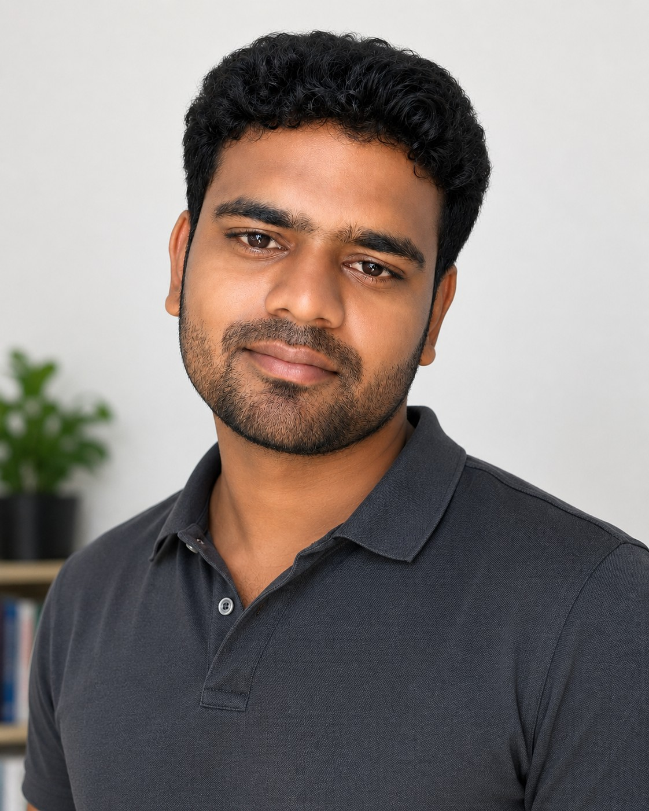

Language Variation • Sociolinguistics • Language Documentation • Telugu Linguistics • Geo-Informatics
I am an early-career researcher from Telangana, India, with interdisciplinary interests in Linguistics and Geo-Informatics. My work focuses on language variation, dialectology, multilingualism, language documentation, and sustainable development using spatial technologies.
Download CVOngoing Independent Research · 2026
Research on millet cultivation, water productivity, nutrition, agroecology, and a proposed GIS suitability framework for Telangana.